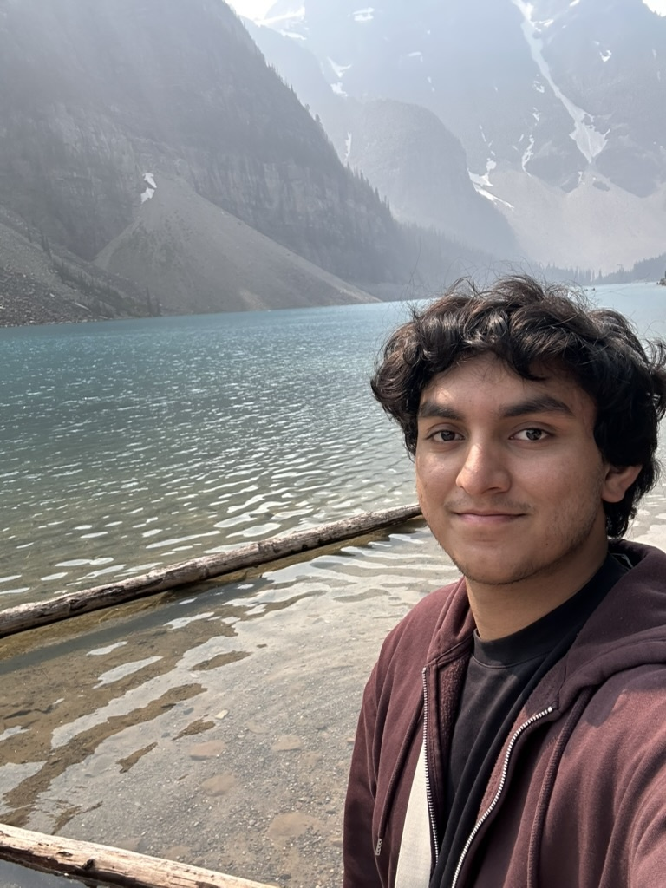

Personal webpage
Sammith Belur

About
I am currently a senior studying Mathematics at Purdue University. Broadly, I am interested in applied mathematics, particularly numerical optimization, dynamical systems, and applied probability. More recently, I have also become interested in the mathematics of imaging science and optimal control, especially problems that connect mathematical theory with computation and real-world applications.
Outside of mathematics, I am an avid sports fan, particularly of cricket, football, and basketball. I also enjoy running, hiking, and traveling whenever I get the chance. More about these interests, along with other fun parts of my life, can be found on the Personal section of this website.
Interests
- Optimization (theory and applications)
- Dynamical systems
- Stochastic modeling
- Applied probability
- Data-driven modeling
- Optimization under uncertainty
Projects & Research
Optimization Research with Prof. Xiangxiong Zhang
Computational Geometry Research
Poster title: "Characterizing Visibility Graphs of Polygons"
Education
Purdue University – West Lafayette
Stanford University
Contact
Please reach me at my email. I look forward to hearing from you.